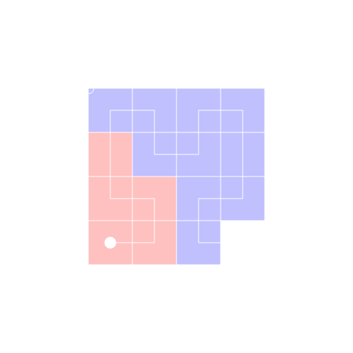

A Hilbert curve is a space-filling curve that allows a dataset of one dimensionality to be mapped to a dataset of a different dimensionality in a way that preserves grouping. For example, bytes in a file could be mapped onto a 2-dimensional image. This means that it is useful for visualising large binary files such as disk images.
This program allows you to view data that has already been mapped onto a Hilbert curve and convert between image coordinates and the underlying 1-dimensional offset. It is specifically tailored for input files where certain data segmnets have been highlighted different colours.
The main algorithm used to implement this program was found on Wikipedia.
License: MIT
Author: chaoticgd
Version: 0.3
Input files are images representing data that has been mapped onto a Hilbert curve in the following format:
Each data segment should be colour coded. For example, a disk image may have an executable segment and a data segment. The executable segment could be coloured red and the data segment could be coloured blue.
The position of the filled dot in which the offset is equal to zero (the origin) can be changed by selecting a different orientation.
Note: Images opened will not be sent over the network.
The 'Goto Offset' function allows you to highlight the position of where a certain offset is represented in the image.
The 'Clear Highlight' function allows you to stop a position from being highlighted.
This section displays information about the pixel under the current cursor.
The 'Base Offset' line shows the offset of the beginning of the colour coded segment that was clicked.